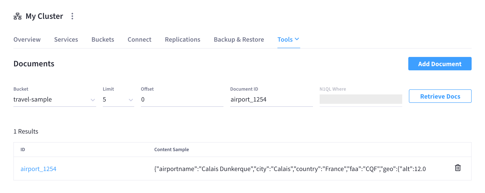
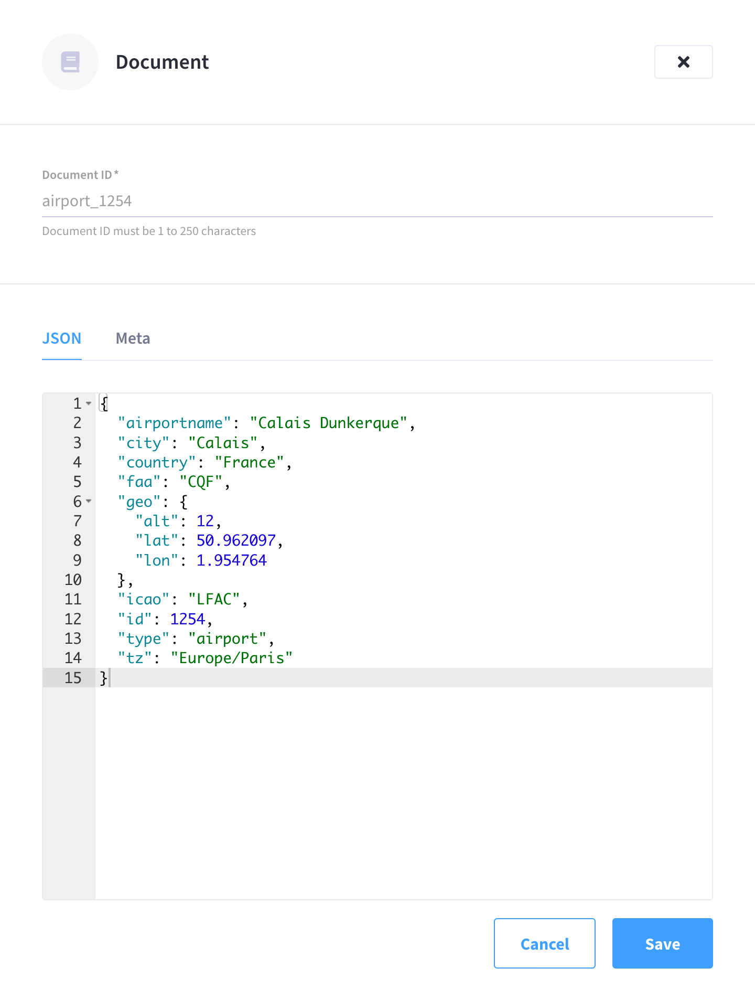

Interact with Data in Your Cluster
There are several ways to insert and interact with data in a cluster.
Prerequisites
The procedures on this page assume that you’ve completed all of the previous Getting Started steps. In particular, it’s important that you have followed the instructions in Configure Access to Your Cluster for granting yourself database permissions. If your user account doesn’t have an associated database user entity for the cluster that you are using, then you won’t be able to perform several of the procedures described on this page, such as viewing and querying documents.
Load Sample Data
A quick way to start interacting with data in your cluster is to load one or more sample buckets. Sample buckets contain example data, as well as example indexes, for your experimentation.
Sample buckets can be found under each cluster’s Tools > Import tab.
Click Import next to any of the available sample buckets to load them into your cluster. (Note that it may take some time for a sample bucket to load and show up in the relevant areas of the Couchbase Cloud UI.)
It’s recommended that you at least start with the Travel Sample bucket, since many of the examples in the documentation will act on this bucket. If your cluster is running the Index Service, this sample bucket will automatically create indexes on the bucket data, which in turn makes it convenient to test out the features of the Query Service.
View Sample Buckets
In Couchbase, buckets serve as the mechanism for storing data, and are the principle component of the Data Service that runs on every cluster. Buckets must be created before you can store any data on a cluster.
All of the buckets on a cluster can be viewed from the cluster’s Buckets tab.
If you deployed any of the sample buckets, you can inspect them here alongside the default bucket (as well as any other buckets you create). You can check that a sample bucket has finished loading by inspecting the Items column to see that it has populated with a non-zero number.
For more information about interacting with buckets, refer to Manage Buckets.
View Sample Indexes
In Couchbase, primary and global secondary indexes — also known as just indexes — are predefined subsets of bucket-data created by the Index Service. These indexes can then be queried by the Query Service by means of the N1QL query language.
All of the indexes in a cluster can be viewed under the cluster’s Tools > Indexes tab.
Normally, a N1QL CREATE INDEX statement is required to create an index. However, some of the sample buckets, such as Travel Sample, come with index definitions that are automatically used to build indexes on the sample data (which can be seen in the image above). Once the Status for each index displays as Ready, the indexes can be used to assist with different types of sample queries.
For more information about viewing and interacting with indexes, refer to Index Service.
Query Sample Data
On clusters running the Query Service, the Couchbase Cloud UI provides an interactive query tool called the Query Workbench. Using the Query Workbench, you can conveniently explore data, create, edit, run, and save N1QL queries, view and save query results, and explore the document structures in a bucket — all in a single window.
The Query Workbench is available under each cluster’s Tools > Query Workbench tab.
If you loaded the Travel Sample bucket, you can try out the Query Workbench by entering the following N1QL query into the Query Editor:
SELECT * FROM `travel-sample` WHERE type="airport" LIMIT 1;When executed, this query returns a maximum of one airport document, and lists all of the fields that it contains. To execute the query, type Return or click Execute. The results are displayed in the Query Results field:
To learn more about using the Query Workbench, refer to Query Workbench.
View and Edit Sample Data Directly
You can directly view, create, and edit individual bucket documents under each cluster’s Tools > Documents tab.
To view or edit the same document that was queried in the previous section:
-
Click the Bucket drop-down menu and select
travel-sample. -
In the Document ID field, enter
airport_1254and click Retrieve Docs. -
In the Results table, click on the document to open it in the Document fly-out menu.
From here you can make direct edits to the document. To save any edits, click Save.
For more information about using the document viewer, refer to Manage Documents.
View Data with the SDK
Couchbase SDKs allow you to interact programmatically with the Data, Query, and other Couchbase services provided by the cluster, to create applications. Our SDK documentation contains practical examples for all of the SDKs.
Here is a snippet of Node.js code demonstrating iterating over the results of a query against the Travel Sample bucket:
Unresolved include directive in modules/get-started/pages/load-data.adoc - include::3.0@nodejs-sdk:devguide:example$nodejs/n1ql-queries.js[]Explore Couchbase Cloud
Congratulations! You’ve successfully deployed and connected to a cluster, and started interacting with data.
The Couchbase Cloud documentation landing page is a good resource for exploring additional features, but the following topics also provide a good starting point: